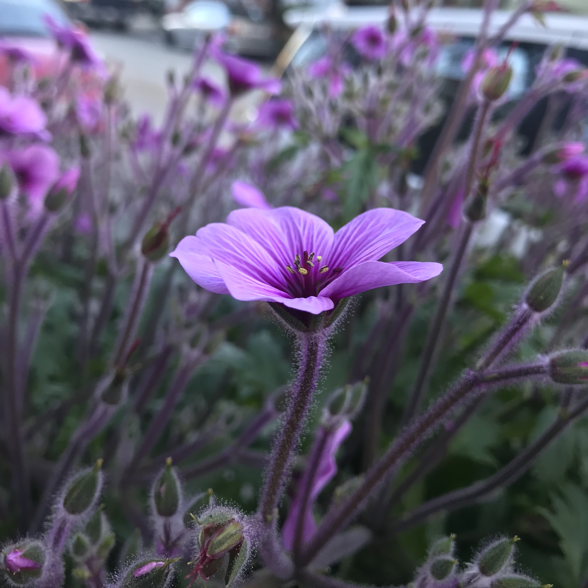
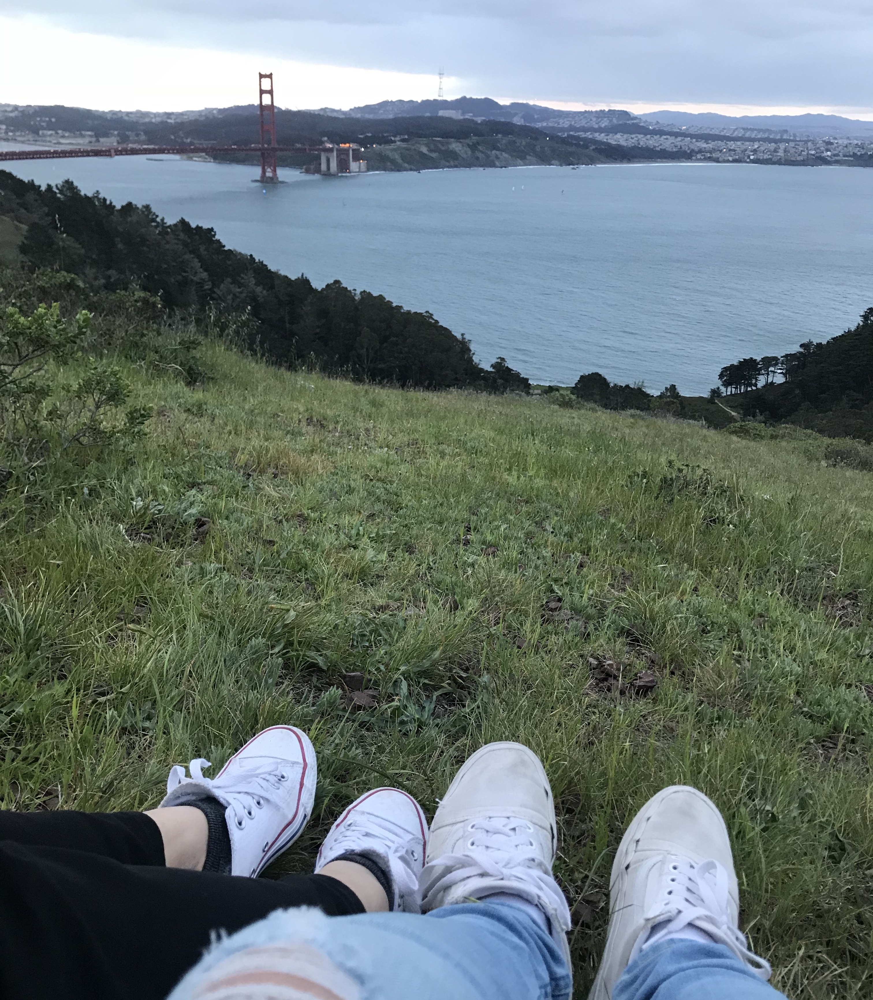
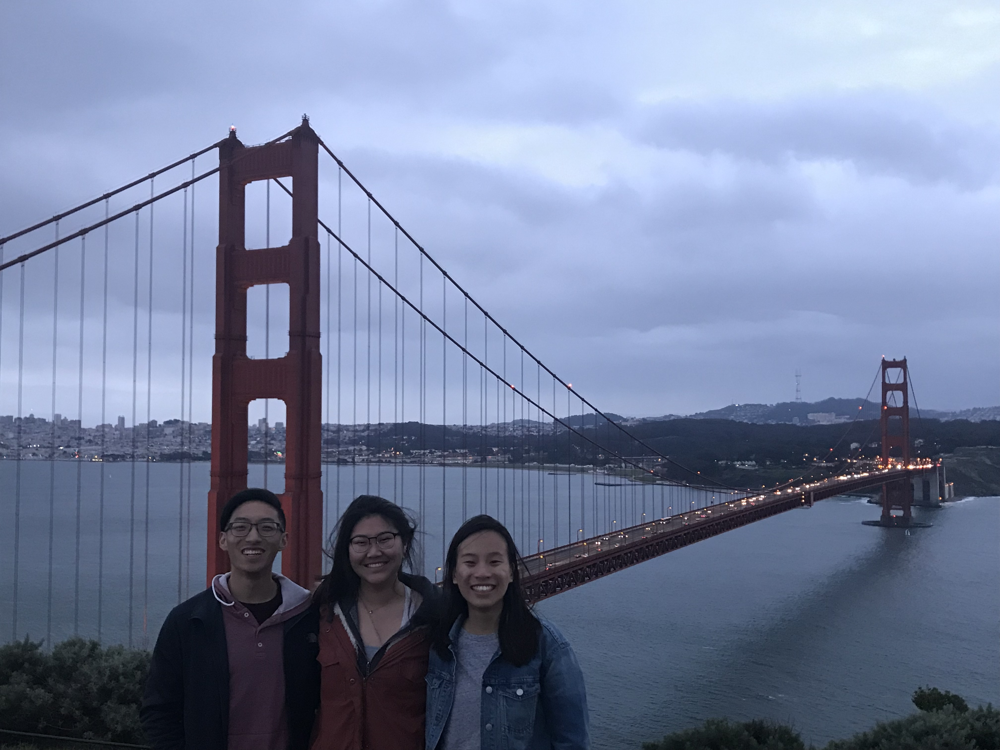
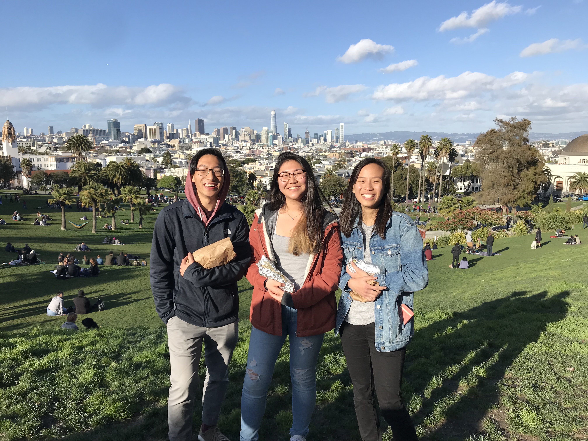

We spent the whole day studying and working there until late afternoon, when our other good friend, Megan, joined us. We then drove over to La Taqueria to get burritos. Once we ordered, we spontaneously decided that it would be nice to eat our burritos at Dolores Park, so we drove over and sat on the grass in the sun and had sort of a mini picnic. The burrito was actually probably one of the best burritos I have ever eaten, or as Andrew put it, "It was absolutely beautiful, like a nuanced sort of beautiful. The taco was the finesse, like the piece de resistance, while the burrito was like the comfort food to take you down the rest of the culinary journey."